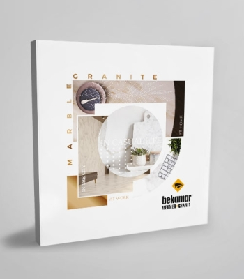
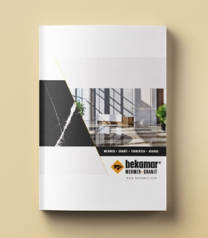

Mimari Katalog
Doğal taş koleksiyonları ve mimari yüzeylerle projelerinize yön verecek seçkiler.
KATALOĞU İNCELEDoğanın kalıcılığı, Bekamar'ın imzası.

BEKAMAR · YAYINLAR
Doğanın milyonlarca yılda şekillendirdiği dokular, yaşam alanlarınıza ilham versin. Bekamar yayınlarında koleksiyonlarımızı ve yüzey seçeneklerimizi yakından inceleyin.
İKİ YAYIN TEK BİR KEŞİF
Doğal taş koleksiyonları ve mimari yüzeylerle projelerinize yön verecek seçkiler.
KATALOĞU İNCELE
Mermer, granit, traverten ve kuvars yüzey seçeneklerini bir arada keşfedin.
KATALOĞU İNCELEPROJENİZ İÇİN
Doğru yüzeyi
birlikte seçelim.